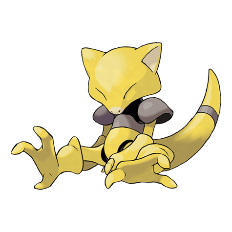
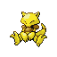

Назад
Арба

Арба — Покемон 1 поколения под номером 63 в Покедекс. Обитает он в регионе Канто и относится к Психическому типу. Арба спит по 18 часов в сутки. Однако он способен ощущать присутствие врагов даже во время сна. В опасной ситуации этот Покемон немедленно телепортируется в безопасное место.
Тип:
Психический
Эволюция

# 063 Абра
=>
# 064 Кадабра